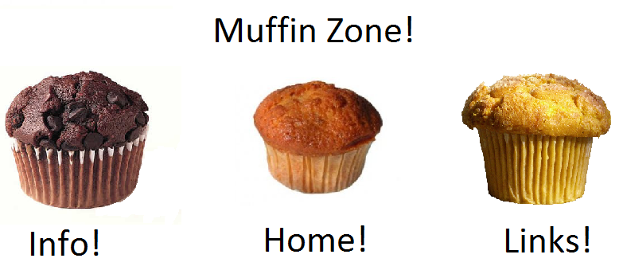

Our Favorite Muffin Links!
Recipes for making your own muffins!
Cartoons about muffins!
A short history of muffins.
Other things you can make in muffin tins, they are very useful (though you probably just want to keep making muffins).
More muffin information.